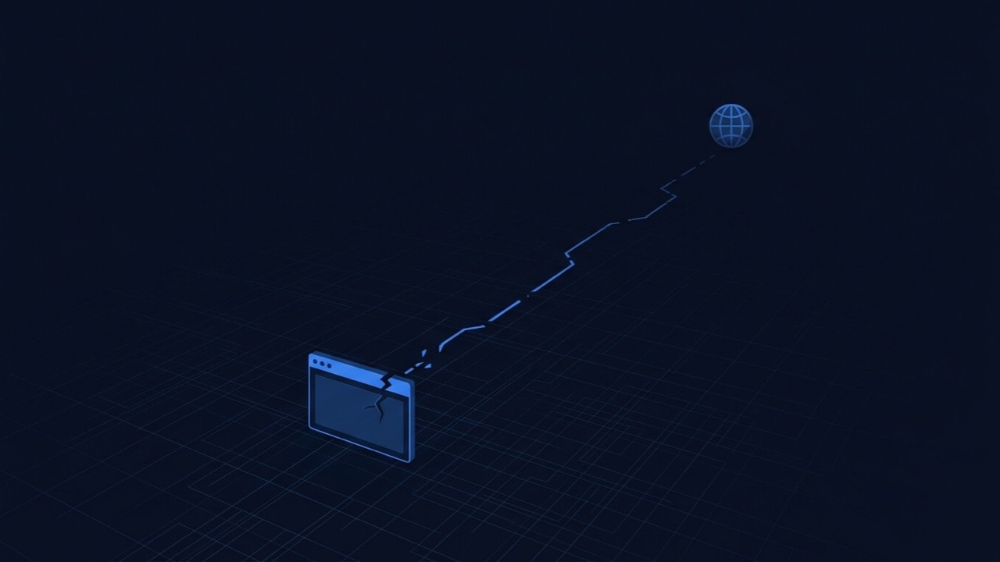

WordPress Site Not Loading At All? Start Here Before You Panic.
No error page, no white screen, nothing WordPress-shaped at all — just a browser telling you it can't reach the site, an SSL warning, or a redirect loop that never ends. Before you touch a single plugin, it's worth thirty seconds to work out whether WordPress is even the problem.

What is the problem?
Most of the guides in this library start from something WordPress showed you — a blank page, a fatal error message, a 500 from your server. This one is different. If your site "isn't loading," the first thing worth confirming is whether WordPress ever got the chance to run at all. A browser saying it can't reach the site, warning that the connection isn't private, or looping forever between http:// and https:// is telling you something failed before your server even had the opportunity to hand a request to WordPress.
Quick answer: if you see anything WordPress-shaped — a white page, a styled error, your theme's header even partially rendering — the problem is on the 500 error or white screen side. If you see a raw browser error before any page content appears at all, it's DNS, SSL, hosting, or a redirect loop — and that's what this guide is for.
That distinction matters because the fixes are completely different. A plugin conflict will never cause a DNS error. A theme bug will never expire an SSL certificate. Troubleshooting a connection-level failure as if it were a WordPress bug just burns time you don't have while the site stays down.
Common symptoms
- The browser shows “This site can't be reached” or
DNS_PROBE_FINISHED_NXDOMAINinstead of any page content - A full-page “Your connection is not private” warning blocks access before the site loads
- The address bar cycles and eventually shows
ERR_TOO_MANY_REDIRECTS, or the tab spins forever switching betweenhttpandhttps - The site loads normally for you but a colleague, client or visitor in another location reports it's down
- It works on mobile data but not on your home or office wifi, or the other way round
- The page hangs for a long time with no content, then simply times out with no error text at all
- Visiting the server's raw IP address shows the site fine, but the actual domain doesn't
Why does this happen?
WordPress is an application that runs on a server, but reaching that server at all depends on several things happening correctly first: your domain's DNS records have to point at the right server, an SSL certificate has to be valid so the browser trusts the connection, and the hosting account itself has to be active and responding. None of that is WordPress's job — it's the infrastructure WordPress sits on top of. When any one of those layers breaks, the browser stops before it ever requests a page from WordPress, which is why you don't see a WordPress error at all. You see a browser-level message instead, because the browser is the one refusing to proceed.
These failures also tend to arrive suddenly and without warning, right after something changed — a domain renewal missed, a host migration, a CDN setting flipped, a certificate that quietly expired in the background. That abruptness is itself a clue: a WordPress bug from a plugin update usually shows a WordPress-generated error; an infrastructure failure just cuts the connection.
Common technical causes
- DNS records misconfigured or not yet propagated — a wrong A record, or nameservers still pointing at an old host after a migration
- The domain itself has expired or is sitting in a registrar's redemption or grace period
- An SSL certificate expired or failed to auto-renew, so the browser blocks the connection outright rather than showing any WordPress content
- The hosting account is suspended — for an unpaid invoice, exceeding resource limits, or a terms-of-service or malware flag — which stops the server responding at all
- A redirect loop from forcing HTTPS at two layers at once — the server and a WordPress plugin both trying to redirect, disagreeing with each other
- A CDN or firewall's SSL mode set incorrectly relative to the origin server — Cloudflare's “Flexible” mode combined with an origin server that also forces HTTPS is the single most common cause of this exact loop
- Local DNS caching on a visitor's device or ISP still resolving to an old server IP after a migration, so different people see different things for up to a day or two
How to diagnose it
- Run the domain through an external DNS checker. This shows what A record the domain currently resolves to worldwide, not just from your own location, and whether it matches your actual hosting server.
- Try a different network entirely. Switch from wifi to mobile data (or vice versa) and reload. If it works on one network and not the other, this is a local or ISP-level DNS caching issue, not a real outage.
- Check the SSL certificate directly. Click the padlock or connection info icon in the address bar (where the site loads at all) to see the certificate's validity dates and the domain it's actually issued for.
- Log into the hosting control panel. A suspended account almost always shows a clear notice on login, stating the reason.
- Check the domain's expiry date at the registrar. This is the most overlooked cause on this list, and the easiest to miss until it's already down.
- Check any CDN or firewall in front of the site (Cloudflare is the most common) for its current SSL/TLS mode and whether an aggressive security setting is active.
- Load the server's raw IP address directly. If the site displays correctly by IP but not by domain, the server itself is fine and the problem is entirely DNS.
How to fix it, step by step
- Correct any wrong DNS records at the domain registrar or DNS provider — the A record, and any nameserver settings if you've changed hosts — then allow time for propagation. It's usually much faster than the worst-case 24–48 hours, but genuinely takes some time.
- Renew an expired domain immediately through the registrar. Domains in an early grace period can usually be restored without extra cost, but that window closes.
- Reissue the SSL certificate if it's expired or broken. Most hosts can auto-issue a free Let's Encrypt certificate with one click from the control panel — manually trigger that if it didn't renew on its own.
- Resolve a hosting suspension directly with the host. Pay an outstanding invoice, or if it's a resource or malware flag, address the underlying cause first — the host will usually explain exactly what's needed to reinstate the account.
- Fix a redirect loop by forcing HTTPS at only one layer. If you're using Cloudflare and the origin server also forces HTTPS, set Cloudflare's SSL/TLS mode to “Full” or “Full (strict)” rather than “Flexible” — that mismatch is the most common cause of this exact loop.
- Turn off an aggressive CDN security mode (like Cloudflare's “Under Attack” mode) once you've confirmed there's no actual attack in progress and it's simply blocking legitimate visitors.
- Clear your own local DNS cache before concluding a fix hasn't worked — what looks like a failed fix is often just your own machine still holding the old answer.
- Confirm the raw server IP still serves the correct site to isolate whether you're dealing with a DNS/domain-level issue or a genuine server problem.
- Monitor from a few different networks over the next day once you believe it's fixed, since a change that looks resolved to you may not have reached every visitor yet.
When this needs professional help
Several of these fixes are realistic for a site owner to make directly through a registrar or hosting panel. It's worth bringing in a developer when:
- DNS or domain registrar access isn't available to you directly — an agency or a previous developer still controls it
- The hosting account is suspended for a technical reason like malware, and needs a proper cleanup before it can be reinstated safely
- A redirect loop involves more than one layer — a CDN, the server, and a WordPress plugin — and they need to be coordinated together rather than toggled one at a time
- You've worked through the diagnosis steps above and the cause still isn't clear, while the site stays down and costs real time or business
How I can help
This one usually comes down to speed: telling apart a DNS, SSL, hosting or WordPress-level cause quickly, because each needs a completely different fix and people often lose hours troubleshooting the wrong layer entirely — deactivating plugins on a site that was never going to load a plugin in the first place. Over eleven years of freelance WordPress work I've dealt with this across DNS providers, CDNs and hosts of every size, and I can usually tell you which layer is actually broken within minutes of looking, then coordinate the fix across whichever combination of host, CDN and WordPress is involved.